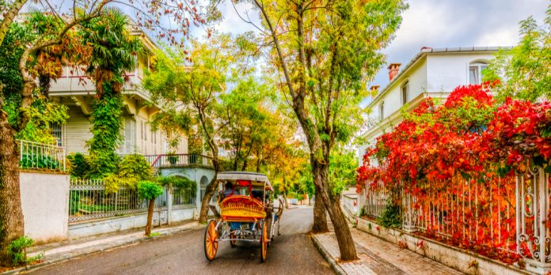
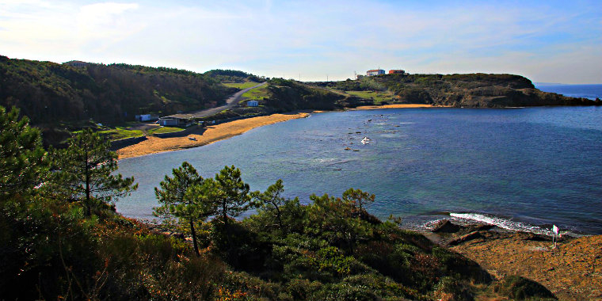
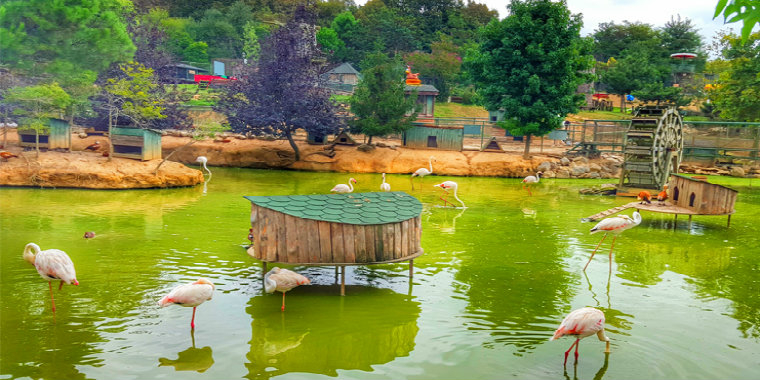
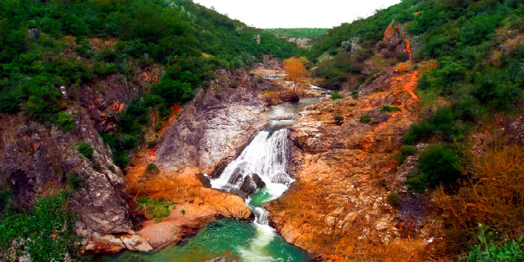
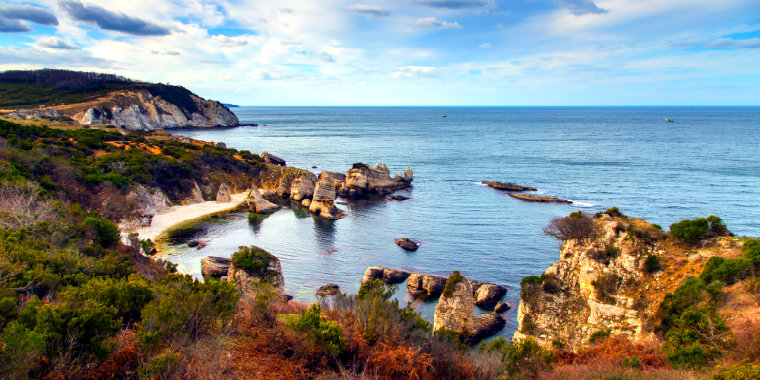
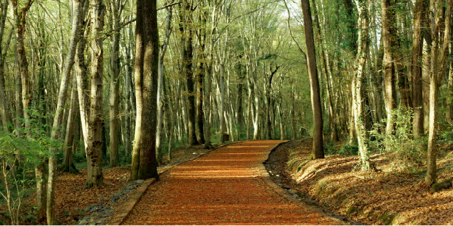
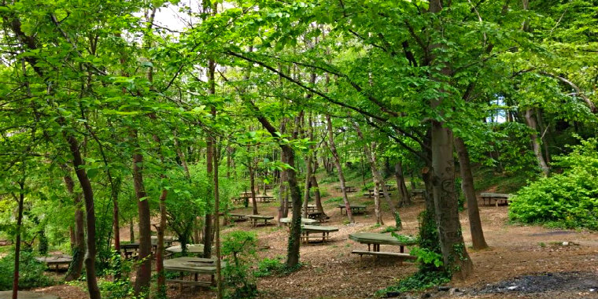
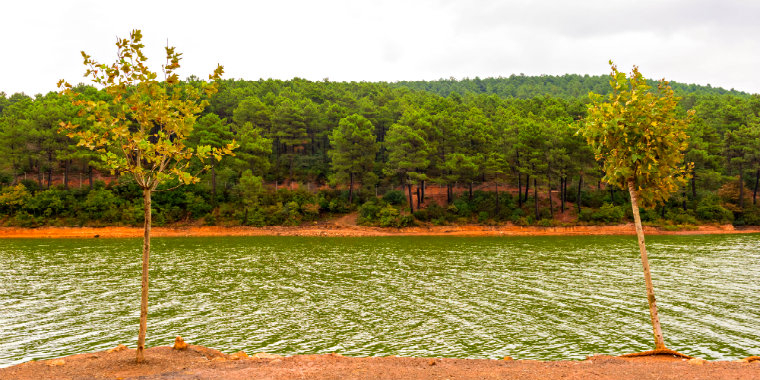

|  |  |  |  |
| Büyükada | Riva | Polonezköy | Ballıkayalar Tabiat Parkı |
|  |  |  |  |
| Ağva | Belgrad Ormanı | Beykoz Kaymakdonduran Ormanı | Aydos Ormanı |
İSTANBUL’UN TARİHİ
Kuruluş
Daha kuruluş efsanelerinden itibaren etkileyicidir hikâyesi: Yunanistan’da, Megara’dan yola çıkan Byzas, yeni bir şehir kurmak istemektedir. Yer konusunda gidip Delfi Kahini’ne danışır. Kahin de, şehrini “Körler Ülkesi’nin karşısına” kuracağını söyler. Byzas kafası karışmış bir şekilde dolanırken, bugünkü Sarayburnu’ndan o günkü Khalkedon’a (Kadıköy) bakarak, “Bu körler niye şehirlerini bu güzelim yer dururken o çorak yere kurmuşlar ki?” diye düşünür. Ve tabii aklına Delfi Kahini’nin sözleri gelir. İstanbul’u nereye kuracağını bulmuştur.
İstanbul adı
İstanbul adı ise, sanıldığı gibi şehre Osmanlılar tarafından konmamıştır. Daha eskidir. 9. yüzyılda Fütuh’üş-Şam adlı eserde bir insan ismi olarak geçer. Rum Meliki Timaoş’un oğlu İstanbul, dört sene süren hükümdarlığı boyunca şehrin inşaası için çalışır. Ama şehri yerine geçen Konstantin tamamlar ve adını koyar. 10. yüzyıl kitabı Tenbih (Mesudi)’de İstinbolin olarak geçer. İstanbul adıyla ilgili bir kısmı birbiriyle çelişen başka birçok bilgi vardır. Ayrıca İstanbul, binlerce yıl boyunca Byzantion, Konstantinopolis, Konstantiniyye, Asitane, Darülhilafe, Dersaadet gibi onlarca isimle anılmıştır.
Tarih öncesi ve Byzantion Dönemi
İstanbul’un tarihi üç yüz bin sene önceye kadar gider. Küçükçekmece Gölü civarında, Neolitik ve Kalkolitik insanların yaşadığı düşünülmektedir. Dudullu yakınlarında Alt Paleolitik Çağ’a, Ağaçlı yakınlarında ise, Orta Paleolitik Çağ ile Üst Paleolitik Çağ’a özgü aletlere rastlanmıştır. 2008’de Marmaray tüp geçidi kazıları sırasında Cilalı Taş Devri’ne (MÖ 6500), Anadolu Yakası’nda Fikirtepe’de yapılan kazılarda Bakır Çağı’na (MÖ 5500–3500), Kadıköy’de ise Fenikelilere ait kalıntılar bulundu. Yukarıda efsanesini anlattığımız Kral Byzas’ın hüküm sürdüğü MÖ 667 yılında Byzantion kurulur. Kente Roma İmparatorluğu hâkim olunca, kente Septimius Severus tarafından kısa süreliğine oğlunun adı Augusta Antonina konur. İmparator I. Konstantin zamanında kent, Roma İmparatorluğu’nun başkenti ilan edilir. Bu sırada Nova Roma olarak değiştirilen kentin adı benimsenir. Ve 337 yılında İmparator I. Konstantin’in ölümüyle Konstantinopolis’e çevirilir.
Bizans İmparatorluğu dönemi
324 – 1453 yılları arasınındadır. İstanbul bu dönemde Roma’nın doğusunun yönetim merkezi olmuştur. Bu dönemde; yeni bir mimari yapıyla şehir her bakımdan genişlemiş, gelişmiştir. 100.000 kişilik bir hipodromun (Sultanahmet Meydanı) yanı sıra, limanlar ve su tesisleri yapılmıştır. Dünya’nın en büyük katedrali olan Ayasofya’yı 360’da kuran Konstantin; böylece Roma İmparatorluğu’nun dinini de Hıristiyanlık olarak değiştirmiş ve Pagan Roma dinine inanan Batı ile ilk kopuş bu dönemde olmuştur. Bizans İmparatorluğu, I. Theodosius’un ölümü ile başlar. 476’da Batı Roma yıkılınca, Batı Roma İmparatorluğu’ndaki Romalıların büyük bir çoğunluğu buraya göç eder. Ve Bizans İmparatorluğu’nun da başkenti böylece İstanbul olur. 543’teki veba salgını nüfusun yarısını öldürür. İmparator I. Jüstinyen şehri yeni baştan kurar. Defalarca saldırıya uğrayan İstanbul, 1204’te 4. Haçlı Seferi’nde yağmalanır, enkaz haline getirilir. Latinlerin dönemi 1261’de sona erer. Bu dönemden sonra giderek küçülen Bizans; Osmanlı İmparatorluğu tarafından 1391’den sonra kuşatılmaya başlanır.
Osmanlı İmparatorluğu dönemi
Efsane fetih, 29 Mayıs 1453’te gerçekleşti. Bu tarih, ayrıca Ortaçağ’ın sonunu tanımlar. Osmanlı döneminde İstanbul hızla gelişmiştir. Yüzlerce saray, çarşı, cami, okul ve hamam açılmış, İstanbul 50 yıl içinde Yahudilerin, Hıristiyanların ve Müslümanların uyum içinde yaşadığı, dünyanın en büyük şehirlerinden birisi haline gelmiştir. Haliç’in üzerine köprü, Karaköy’e tünel, demiryolları, kentin içindeki deniz taşımacılığı, belediye örgütlerinin, hastanelerin kurulması gibi birçok yenilikle modern bir şehir halini almıştır. 1918’de İtilaf Devletleri tarafından işgal edilir.
Cumhuriyet dönemi
İstanbul’un 2500 yıllık başkentlik dönemi, Cumhuriyet’le birlikte, 29 Ekim 1923’te sona erer. Ancak bu tarihten itibaren dünyanın en kalabalık, ekonomik ve kültürel açıdan en hareketli şehri olmaya doğru emin adımlarla ilerleyecektir. Genç nüfusuyla Türkiye’nin modernleşme serüveninden payına düşeni fazlasıyla alan İstanbul, günümüzde dünyaya birçok alanda entegre olmuş bir şehir haline gelmiştir. Nitelikli iş gücü, kültür ve eğlence turizmi dendiğinde akla ilk gelen metropoldür. Bugün İstanbul’un toplam 39 ilçesi vardır. Bu ilçelerin 25’i Avrupa Yakası’nda, 14’ü ise Anadolu Yakası’ndadır. 14.160.467 kişilik nüfusuyla iktisat ve nüfus açısından da dünyanın en büyük metropollerinden biridir.